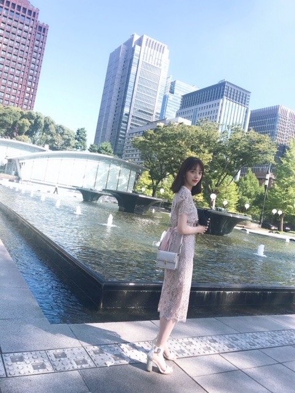
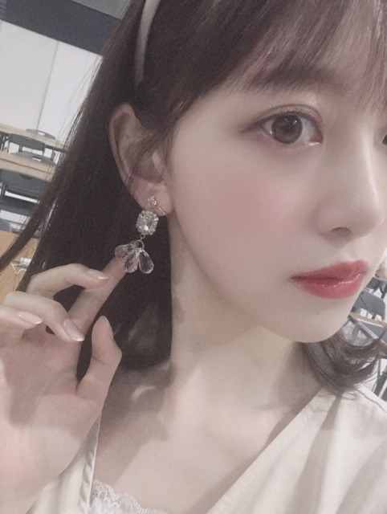
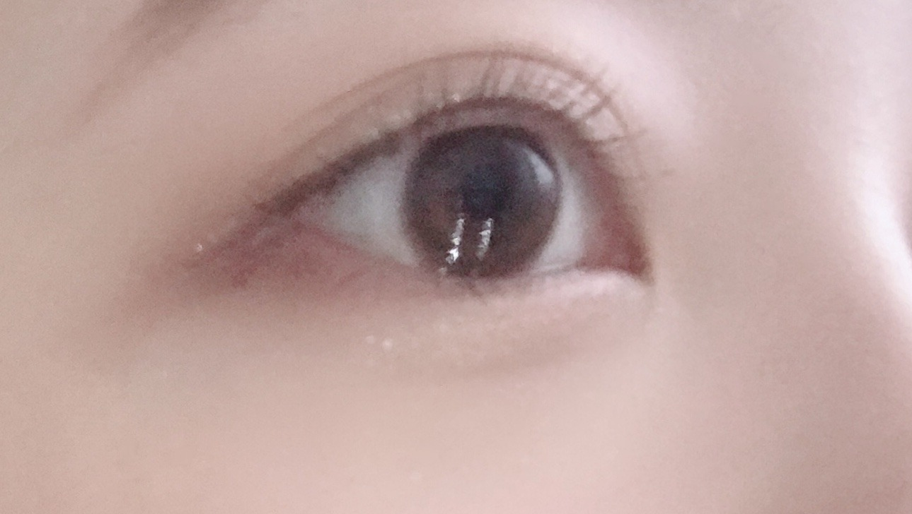

2019/0909Mon #mionafashion

オトナかわいい ファッションが最近はすきです❤︎
この日は友達と映画&ランチだったのでドレッシーな感じにしてみました~
DIANAのこのサンダルは、履き心地もいいしデザインも上品でかれこれ2〜3年愛用してます
靴擦れしやすいのですがDIANAの靴はあまり靴擦れしないから信頼してます！
one-piece...milkcocoa
bag...FURFUR
クレドポーのリップスティックとWHOMEEのリップペンシルを重ね塗りするのが最近のブーム❤︎
ツヤツヤにしてからマットを重ねるの、良き！

このイヤリングは海外旅行行った時に買ったもので、わたしはピアスが開いてないのでかわいいイヤリングを見つけたら衝動買いしちゃいます❤︎❤︎
~アイメイク紹介~

キラ艶まぶた，まつげのあげ方，にこだわってます！
マスカラ、アイラインは絶対茶色で
アイシャドウも赤茶系にしてます
まつげはビューラー マスカラ下地 マスカラ ホットビューラーの順で目頭、黒目の上あたりは上にくるんってあげるけど目尻はビューラーを逆さにして下にまつげをさげてます☺︎
下まつ毛もかなり大事！必ずつけてます。
目の重心を下に下げることしか考えてないです。笑
自分がどういう目や顔になりたいかでメイクは変えていくべきだとおもうので今はナチュラルなタレ目メイクを研究中です！
マスカラは断然ヒロインメイク派だけどamplitudeのブラウンマスカラもかなり良きでした☺︎
WHOMEEのマスカラもたのしみです
今年の秋冬はヴィンテージ感のあるものも取り入れながら品のあるフランスにいそうなオトナかわいい女子をファッションもメイクも目指したいなぁ...❤︎
では！
2019/09/09 16:30
コメント(310)
みおなちゃん更新ありがとう╰(*´︶`*)╯♡
写真もありがと〜(*´꒳`*)
やっぱおしゃれさんだね（╹◡╹）♡
後輩メンバーさんもみおなちゃんのメイクやファッション参考にしてる子もいるみたいだからね(๑>◡<๑)
写真もありがと〜(*´꒳`*)
やっぱおしゃれさんだね（╹◡╹）♡
後輩メンバーさんもみおなちゃんのメイクやファッション参考にしてる子もいるみたいだからね(๑>◡<๑)
最近乃木坂好きになったんですけど推しはすぐ堀ちゃんに決まりました。めちゃくちゃ変わりましたです。乃木坂好きになって人生変わりました。これからも頑張って下さい。
ブログ更新ありがとう！未央奈ちゃんのメイク すっごい好きだから紹介してくれるのありがたい〜 ( ◜௰◝ ) そしてイヤリングめちゃくちゃかわいい！タイプ！大人かわいいファッションも似合ってて素敵 ( ˆoˆ )/❤︎
名古屋の握手会お疲れ様でした！
未央奈に握手しに行ったよー
ウインクしてくれてありがとう！
未央奈に握手しに行ったよー
ウインクしてくれてありがとう！
写真の並び順が、デートの待ち合わせみたいで読んでいて緊張しました(笑)。
いつもメイクやファッションについて紹介してくれてありがとう！！特にメイクとっても参考になります！ビューラーの使い方マネしてみるね！わたしもナチュラルなタレ目メイク知りたいな〜〜おやすみなさい
すんごい参考になります！わたしもヒロインメイク使ってます〜！
未央奈が使ってるならもうリピしまくります！ほんと可愛いしそのワンピース来て握手行きたい、、！憧れです ❤︎
未央奈が使ってるならもうリピしまくります！ほんと可愛いしそのワンピース来て握手行きたい、、！憧れです ❤︎
未央奈～ こんにちは
連日のブログ更新ありがとうございます。
昨日は握手会、おつかれさまでした。
無事に帰ってこれたようで、何よりです。握手会より、それを終えてから帰ってくるまでの方が大変だったことと思います。本当におつかれさまでした。
私はメイクのことはよく分かりませんが、このコーナー、女の子に人気のようで、ありがたいことですね。
いろんなことを話題にして、こまめにブログに紹介、こうしてブログをずっと大切にしてくれている未央奈に、改めて感謝です。
これからも、よろしくお願いしますね。
連日のブログ更新ありがとうございます。
昨日は握手会、おつかれさまでした。
無事に帰ってこれたようで、何よりです。握手会より、それを終えてから帰ってくるまでの方が大変だったことと思います。本当におつかれさまでした。
私はメイクのことはよく分かりませんが、このコーナー、女の子に人気のようで、ありがたいことですね。
いろんなことを話題にして、こまめにブログに紹介、こうしてブログをずっと大切にしてくれている未央奈に、改めて感謝です。
これからも、よろしくお願いしますね。
ほんとメイク上手になったなー(*´ｪ｀*)
わたしにも教えてほしいぐらい（笑）
アイメイクがマンネリ化してる（ ; ; ）
最近ずーっとスニーカーコーデしすぎて
ヒール久しく履いてない（笑）
わたしにも教えてほしいぐらい（笑）
アイメイクがマンネリ化してる（ ; ; ）
最近ずーっとスニーカーコーデしすぎて
ヒール久しく履いてない（笑）
未央奈～☆☆
噴水前の未央奈、綺麗だな～
未央奈がそこにいるだけで、
うしろの景色がパリの噴水に見えてきた。笑
噴水前の未央奈、綺麗だな～
未央奈がそこにいるだけで、
うしろの景色がパリの噴水に見えてきた。笑
堀ちゃんこんばんは！
1つ前の記事の話題で恐縮ですが…僕も昔から空が好きなんですが、堀ちゃんが載せる空の写真がとても好きです( ´ ▽ ` )
去年の秋ぐらい、ちょうどこの時期ぐらいかもしれないです、堀ちゃんが雲の写真を載せてくれて、ぼんやり見ながら癒された記憶があります(o^^o)
「広すぎてなにかを遠くに感じて、時々冷たく感じる」
この言葉めちゃくちゃ分かります、ちょっとビックリするぐらい( ´ ▽ ` )
空はいつでも広くてその広さが心を穏やかにしてくれて、でも広すぎてなんだか不安になることもあります、きっとそのときの心境によるんですかね( ´ ー ` )
そんなときもひっくるめて空が好きです、仕事が終わって疲れたときも自分を自分に引き戻してくれる気がして(o^^o)
青空も好きですし朱い夕焼け空も好きで、夜空も好き、雲も好きで星も好き、月も好きで虹も好き、空を見ると好きなものが見えてそれだけでちょっとした幸せ( ´ ▽ ` )♩
そして遠いどこかでも空を好きな人が、同じ空を、同じ月を見ていると思うとそれもまた幸せ、その人が大好きな堀ちゃんならこの上ない幸せ(o^^o)
奇跡的に同じ空を堀ちゃんと見上げられるかもと思いつつ、明日からもふと空を見上げます、きっと無意識のうちに(^^)
なんか恥ずかしいこと書いてる気がしますが夜に出る本音としてそのまま書かせてもらいます笑
そしてこれまた2つ前の記事の話題で申し訳ないんですが…
「ずっと乃木坂でいれたら幸せなのになぁ
来世も。来来世も。このメンバーで。」
このフレーズが、泣きそうになるぐらい胸にグッときて、心の底から嬉しかったです(o^^o)
大好きな堀ちゃんが、大好きな乃木坂46を、きっと僕よりも深く愛しているのが伝わってくる、こんなに幸せなことって他にないんじゃないかなと、決して大げさじゃなく( ´ ー ` )
(僕もめちゃくちゃ乃木坂大好きですけどね！)
乃木坂46を強く深く愛している堀ちゃんが、それを表現して伝えてくれている堀ちゃんが大好きです、本当に心から(o^^o)♩
堀ちゃんのブログを見て感じたこと伝えたいことがたくさんあって、本当ならその記事にちゃんとコメントしたかったんですが…遅れてこんな形で申し訳ないです(>_<)
でもどうしても書き表したかったので、ここにて失礼します…！
書きたいこと伝えたいことたくさんあるんです、大人かわいいも可愛すぎて、たくさん感じた可愛さを伝えたいんですが長くなってしまったので…またコメントさせてください！！
1つ前の記事の話題で恐縮ですが…僕も昔から空が好きなんですが、堀ちゃんが載せる空の写真がとても好きです( ´ ▽ ` )
去年の秋ぐらい、ちょうどこの時期ぐらいかもしれないです、堀ちゃんが雲の写真を載せてくれて、ぼんやり見ながら癒された記憶があります(o^^o)
「広すぎてなにかを遠くに感じて、時々冷たく感じる」
この言葉めちゃくちゃ分かります、ちょっとビックリするぐらい( ´ ▽ ` )
空はいつでも広くてその広さが心を穏やかにしてくれて、でも広すぎてなんだか不安になることもあります、きっとそのときの心境によるんですかね( ´ ー ` )
そんなときもひっくるめて空が好きです、仕事が終わって疲れたときも自分を自分に引き戻してくれる気がして(o^^o)
青空も好きですし朱い夕焼け空も好きで、夜空も好き、雲も好きで星も好き、月も好きで虹も好き、空を見ると好きなものが見えてそれだけでちょっとした幸せ( ´ ▽ ` )♩
そして遠いどこかでも空を好きな人が、同じ空を、同じ月を見ていると思うとそれもまた幸せ、その人が大好きな堀ちゃんならこの上ない幸せ(o^^o)
奇跡的に同じ空を堀ちゃんと見上げられるかもと思いつつ、明日からもふと空を見上げます、きっと無意識のうちに(^^)
なんか恥ずかしいこと書いてる気がしますが夜に出る本音としてそのまま書かせてもらいます笑
そしてこれまた2つ前の記事の話題で申し訳ないんですが…
「ずっと乃木坂でいれたら幸せなのになぁ
来世も。来来世も。このメンバーで。」
このフレーズが、泣きそうになるぐらい胸にグッときて、心の底から嬉しかったです(o^^o)
大好きな堀ちゃんが、大好きな乃木坂46を、きっと僕よりも深く愛しているのが伝わってくる、こんなに幸せなことって他にないんじゃないかなと、決して大げさじゃなく( ´ ー ` )
(僕もめちゃくちゃ乃木坂大好きですけどね！)
乃木坂46を強く深く愛している堀ちゃんが、それを表現して伝えてくれている堀ちゃんが大好きです、本当に心から(o^^o)♩
堀ちゃんのブログを見て感じたこと伝えたいことがたくさんあって、本当ならその記事にちゃんとコメントしたかったんですが…遅れてこんな形で申し訳ないです(>_<)
でもどうしても書き表したかったので、ここにて失礼します…！
書きたいこと伝えたいことたくさんあるんです、大人かわいいも可愛すぎて、たくさん感じた可愛さを伝えたいんですが長くなってしまったので…またコメントさせてください！！
未央奈のファッション好きだから嬉しい！
いつもオシャレで意識高くてさすがだね
マウスの動画も最高に可愛くて面白かったー！！
いつもオシャレで意識高くてさすがだね
マウスの動画も最高に可愛くて面白かったー！！
乃木坂ブログを引っ張ってくださりお疲れさまです。
巷を歩いてもここまでお洒落に詳しい人はいませんね。
なんか、開眼しましたな。
さらにば堀さんの場合進むと化粧品の成分研究まで行くかもしれない。
巷を歩いてもここまでお洒落に詳しい人はいませんね。
なんか、開眼しましたな。
さらにば堀さんの場合進むと化粧品の成分研究まで行くかもしれない。
こんばんは╰(*´︶`*)╯
みおなの美に貪欲な姿勢、同性として本当に尊敬します！
メイク方法がとっても参考になる〜〜
内面から美しくていつも惚れ惚れしてるよっ
みおなの美に貪欲な姿勢、同性として本当に尊敬します！
メイク方法がとっても参考になる〜〜
内面から美しくていつも惚れ惚れしてるよっ
美しさと気品が溢れていますね。
まるで王女様がお城から抜け出してきたかのようです。
ジェラートを食べ終えたら、スクーターでローマ市内を散策しませんか。
まるで王女様がお城から抜け出してきたかのようです。
ジェラートを食べ終えたら、スクーターでローマ市内を散策しませんか。
こんなキラキラした子とランチ行けない。
あっ、誘われてなかった笑
あっ、誘われてなかった笑
堀さん、こんばんは。
都会のビル群を背景にした堀さんは大人っぽくてとてもお綺麗です。憧れの美人といった感じです。
メイクでタレ目にできるのって凄いですね。乃木坂工事中のすっぴんの状態で既に可愛かったというのにメイク研究もしっかりしてるんですね。ネズミになるときはそのままの猫目よりもタレ目のが合ってたりするのかもしれませんね。
それでマウスダイナー見ました。堀さんのコメディ演技もお見事で、靴下ドーナツみたいなマウス耳も可愛くて、どんなことでも全部拾うシソンヌ長谷川さんに感動しました。「感情置いてきたのか」で首を横に振る堀さんと縦に振る生田さんと傾げる与田さんの違いと、滑って左手が動いてる長谷川さんが面白かったです。
出身地を言う流れの始まりが、電話３つが狭い空間に置かれてて急いだ結果勢いよく受話器を置いたことだと、最初見たときに思ったので、そこは全部アドリブだったのかなって思いました。
あとスペックを読み上げるのをじろうさんにくい止められる件で、じろうさんの身体の傾きを真似してたのも面白かったです。
あと、乃木坂工事中で写りたがってる後輩さん達に席譲ってあげてたの良かったです。他にも北川さんのブログにダンス教えてくれたと書いてあってこっちまで嬉しくなりました。堀さんがお姉さんやっているというか憧れの先輩をやってるのが僕はとても好きです。
都会のビル群を背景にした堀さんは大人っぽくてとてもお綺麗です。憧れの美人といった感じです。
メイクでタレ目にできるのって凄いですね。乃木坂工事中のすっぴんの状態で既に可愛かったというのにメイク研究もしっかりしてるんですね。ネズミになるときはそのままの猫目よりもタレ目のが合ってたりするのかもしれませんね。
それでマウスダイナー見ました。堀さんのコメディ演技もお見事で、靴下ドーナツみたいなマウス耳も可愛くて、どんなことでも全部拾うシソンヌ長谷川さんに感動しました。「感情置いてきたのか」で首を横に振る堀さんと縦に振る生田さんと傾げる与田さんの違いと、滑って左手が動いてる長谷川さんが面白かったです。
出身地を言う流れの始まりが、電話３つが狭い空間に置かれてて急いだ結果勢いよく受話器を置いたことだと、最初見たときに思ったので、そこは全部アドリブだったのかなって思いました。
あとスペックを読み上げるのをじろうさんにくい止められる件で、じろうさんの身体の傾きを真似してたのも面白かったです。
あと、乃木坂工事中で写りたがってる後輩さん達に席譲ってあげてたの良かったです。他にも北川さんのブログにダンス教えてくれたと書いてあってこっちまで嬉しくなりました。堀さんがお姉さんやっているというか憧れの先輩をやってるのが僕はとても好きです。
日誌更新ありがとう。
これからも応援してます。
これからも応援してます。
街中で見掛けたら絶対振り返って見ちゃうな～
かわいすぎる!
リップペンシルを重ね塗り
するのが最近のブームなんだ～？
そうなんだ～？俺も真似してみようっ


するのが最近のブームなんだ～？
そうなんだ～？俺も真似してみようっ
こんばんは～。
みおなちゃんはホントにオシャレだね。「オトナかわいい」っていうのも男の人は好きな人が多いよ。明るい色の服も夏らしくていいね。オシャレを楽しんで(^^)
じゃあ。
みおなちゃんはホントにオシャレだね。「オトナかわいい」っていうのも男の人は好きな人が多いよ。明るい色の服も夏らしくていいね。オシャレを楽しんで(^^)
じゃあ。
未央奈さんめっちゃ美しい
永遠の推しです
また握手会行きますね！
永遠の推しです
また握手会行きますね！
堀さん、おはようございます。
昨日は台風のせいで、朝からお昼かけては交通が大混乱、そして午後からはめちゃ猛暑でまいりました。堀さんは体調崩したりしていませんか？
読書の秋、芸術の秋、そしておしゃれの秋。今回の堀さんブログはファッションとメイクのお話で、いかにもおしゃれの秋にふさわしい内容。特に女性のファンの皆さんにはためになる話が多いことでしょう。
僕ら男性にとっても美しい女性を見るのは嬉しいもの。次回にも乞うご期待ですね。
ではまたコメント寄せます。今週もがんばりましょう。
さらばだ、また会おう！（気球に乗って去りぬ〜）
昨日は台風のせいで、朝からお昼かけては交通が大混乱、そして午後からはめちゃ猛暑でまいりました。堀さんは体調崩したりしていませんか？
読書の秋、芸術の秋、そしておしゃれの秋。今回の堀さんブログはファッションとメイクのお話で、いかにもおしゃれの秋にふさわしい内容。特に女性のファンの皆さんにはためになる話が多いことでしょう。
僕ら男性にとっても美しい女性を見るのは嬉しいもの。次回にも乞うご期待ですね。
ではまたコメント寄せます。今週もがんばりましょう。
さらばだ、また会おう！（気球に乗って去りぬ〜）
堀ちゃん、ブログ更新ありがとう〜
堀ちゃん、美人だねー
でも、乃木中で見せたすっぴんも
可愛くて好きだな〜
堀ちゃん、美人だねー
でも、乃木中で見せたすっぴんも
可愛くて好きだな〜
堀様更新待ってました！！
ほんとに可愛い！
女子力高くて尊敬します！
では！
次の更新待ってます
ほんとに可愛い！
女子力高くて尊敬します！
では！
次の更新待ってます
今回は 女子向け ブログだね！！ (^_^)
録画予約済み。
①本日のうたコン
②ミュージックステーション
♪夜明けまで強がらなくてもいい
96.5万枚 と テレビで言ってた！！
ps：あと少しだね……
ばいばい (^.^)/~~~ (^_-)-☆
録画予約済み。
①本日のうたコン
②ミュージックステーション
♪夜明けまで強がらなくてもいい
96.5万枚 と テレビで言ってた！！
ps：あと少しだね……
ばいばい (^.^)/~~~ (^_-)-☆
未央奈ちゃん更新ありがとー！
めっさ可愛い！
おしゃれさんやね！好き(≧∀≦)
自分もコーディネートしてほしい。
好きなメンズコーデにしてー。
メイクはよくわからないけど、
可愛いことだけはわかる！
どこまで可愛くなるおつもりですかっ！？
眩しい！
好きだー！
めっさ可愛い！
おしゃれさんやね！好き(≧∀≦)
自分もコーディネートしてほしい。
好きなメンズコーデにしてー。
メイクはよくわからないけど、
可愛いことだけはわかる！
どこまで可愛くなるおつもりですかっ！？
眩しい！
好きだー！
2期生5人で遊んだ時のブログ待ってます♪
メイクは人の顔にデザインと絵を描くことと理解してます。
私、ファッションにはあんまり詳しくないですけど、絵やデザインや人相の模写とか大好きです。
顔の様子だけではなく、多分髪型、衣装、アクセサリー全体的のバランスとか色合いとか構図とか組み合わせとか考えなければいけない、実に奥深いですね。
ナチュラルなタレ目メイク模索中頑張ってね。
私、ファッションにはあんまり詳しくないですけど、絵やデザインや人相の模写とか大好きです。
顔の様子だけではなく、多分髪型、衣装、アクセサリー全体的のバランスとか色合いとか構図とか組み合わせとか考えなければいけない、実に奥深いですね。
ナチュラルなタレ目メイク模索中頑張ってね。
いつも何でメイク研究してますか？
後メイク落とし何使ってますか？
後メイク落とし何使ってますか？
未央奈ちゃん、お疲れさまです。
どこぞの美人OLさんかと思いました。
今回のブログは勉強になりましたね。
僕は多分しないと思うけど
女性っていろいろと勉強して
お化粧しているんですね！
ってことがよくわかりました！
でもなんか･･･
一度は化粧してみたい
気持ちになりました！
なんか変ですかね（笑）
これからも未央奈ちゃんらしく
頑張ってくださいね！！！
応援しています！！！
どこぞの美人OLさんかと思いました。
今回のブログは勉強になりましたね。
僕は多分しないと思うけど
女性っていろいろと勉強して
お化粧しているんですね！
ってことがよくわかりました！
でもなんか･･･
一度は化粧してみたい
気持ちになりました！
なんか変ですかね（笑）
これからも未央奈ちゃんらしく
頑張ってくださいね！！！
応援しています！！！
なんてたってアイドル。未央奈ちゃん。
好き。笑笑
丸の内のあたりが、背景かな？都心のなかでもこんなに清々しい日があるんだね。真ん中に映っている未央奈が、さらに映像を綺麗にしているなぁ。撮った人も上手く撮るよね。大人可愛いって、ピッタリじゃん。
未央奈って、可愛い女の子から綺麗になった、乃木坂の代表みたいなものだもんね。しかし、こんなに綺麗なのに、いろいろ研究してるんだ。美意識が、むちゃくちゃ高いなぁ。休まないウサギに、亀は追い付けないよ。
未央奈って、可愛い女の子から綺麗になった、乃木坂の代表みたいなものだもんね。しかし、こんなに綺麗なのに、いろいろ研究してるんだ。美意識が、むちゃくちゃ高いなぁ。休まないウサギに、亀は追い付けないよ。
未央奈〜！今ほんとにコスメ、ファッション、お肌のケアとかにすんごくハマってるからこうゆうブログ本当にありがたいです（ ; ; ） まつげの目尻側は下げるっていうテク知らなかった！色は茶色ね！私も試してみます！濃くないメイクで目を大きく見せていきたい！最近未央奈ちゃんが使ってるコスメ買いたい欲すごい。高いのもあって買えないのもあるけど笑。ずっと未央奈ちゃんの透き通った純白なメイク憧れてるから、また美容系のブログ待ってるね〜
杏奈ポトフ・コアラ
杏奈ポトフ・コアラ
未央奈ブログ更新ありがとう
可愛いすぎて天使みたい～
可愛いすぎて天使みたい～
おしゃれ(^^)
みおな、可愛いぜ(^^)！！
みおな、可愛いぜ(^^)！！
未央ちゃんブログ更新有り難うございます。未央ちゃん応援してます。
おぱよう。セブンだよ(ฅ'ω'ฅ)♪
おしゃれ楽しんでますねー(^-^)
秋服も可愛いの多いから楽しいよね
オレも秋服好きなんだけど、秋ってすぐ終わっちゃうから寂しい
去年買って着ないで終わった服あるから今年は着よう
でも今年も買っちゃうんだろうな
短い季節いっぱい楽しもう
では、今日も1日楽しもうd(@^∇ﾟ)/ﾌｧｲﾄｯ♪
o(ﾟ▽＾)ﾉｼまたねぃ♪
おしゃれ楽しんでますねー(^-^)
秋服も可愛いの多いから楽しいよね
オレも秋服好きなんだけど、秋ってすぐ終わっちゃうから寂しい
去年買って着ないで終わった服あるから今年は着よう
でも今年も買っちゃうんだろうな
短い季節いっぱい楽しもう
では、今日も1日楽しもうd(@^∇ﾟ)/ﾌｧｲﾄｯ♪
o(ﾟ▽＾)ﾉｼまたねぃ♪
かわいい！早速女の子向けブログ作ってくれて嬉しいです！だいすき
大人可愛い堀未央奈さん
ブログ更新ありがとう⁉︎(^^)
写真が段々と近づいてくるのは
少しドキドキです⁉︎
レースのワンピ可愛すぎる〜
ブログ更新ありがとう⁉︎(^^)
写真が段々と近づいてくるのは
少しドキドキです⁉︎
レースのワンピ可愛すぎる〜
今下呂温泉の旅館におるよー！
岐阜めっちゃいいところ！
岐阜めっちゃいいところ！
みおなちゃん、こんばんは。
バイトルテレビCMテレビショッピング編、僕は動画サイトで見たよ。みおなちゃん、ピザ生地回し、めっちゃじょうずでしたよ。楽しそうでしたね。みおなちゃん、めっちゃかわいかったよ。
３枚目の写メのみおなちゃん、めっちゃ美しくて、めっちゃかわいいです。
みおなちゃん、体調に気をつけて仕事頑張ってね。
またコメントするね。
バイトルテレビCMテレビショッピング編、僕は動画サイトで見たよ。みおなちゃん、ピザ生地回し、めっちゃじょうずでしたよ。楽しそうでしたね。みおなちゃん、めっちゃかわいかったよ。
３枚目の写メのみおなちゃん、めっちゃ美しくて、めっちゃかわいいです。
みおなちゃん、体調に気をつけて仕事頑張ってね。
またコメントするね。
ブログ更新ありがとう！
好きです！
未央奈の女子力は本当にすごいと思う。メイクのこだわりもしっかりしてて、男の自分にはあんまわかんないけど、すごいことは分かるw
もちろんノーメイクでもめちゃめちゃ可愛いけど！
好きです！
未央奈の女子力は本当にすごいと思う。メイクのこだわりもしっかりしてて、男の自分にはあんまわかんないけど、すごいことは分かるw
もちろんノーメイクでもめちゃめちゃ可愛いけど！
ブログ更新ありがとう！
未央奈ちゃんのファッション本当にフランスのオシャレなレディって感じで憧れます…︎☺︎ 透明感がすごくて可愛い未央奈ちゃんが着ると本当にお姫様みたいにキラキラしていて眩しいです。個別握手会の私服もすっごく似合ってた⸜(*ˊᵕˋ*)⸝
タレ目メイクに対しての意識の高さに改めて凄いなぁって脱帽です。ビューラーまでこだわってたとは…美意識の高い未央奈ちゃんのブログを読むと憧れと同時に私も可愛くなりたい！って思うんだ︎☺︎
たぶん私パーソナルカラーが未央奈ちゃんと近くて、コスメのカラーもすごく参考になります。
握手会で可愛いなぁって思っていたから、プルプルにしてからマットを重ねるリップ私も試してみます！
またgirlsブログ更新してくれたら嬉しいです⸜(*ˊᵕˋ*)⸝
未央奈ちゃんのファッション本当にフランスのオシャレなレディって感じで憧れます…︎☺︎ 透明感がすごくて可愛い未央奈ちゃんが着ると本当にお姫様みたいにキラキラしていて眩しいです。個別握手会の私服もすっごく似合ってた⸜(*ˊᵕˋ*)⸝
タレ目メイクに対しての意識の高さに改めて凄いなぁって脱帽です。ビューラーまでこだわってたとは…美意識の高い未央奈ちゃんのブログを読むと憧れと同時に私も可愛くなりたい！って思うんだ︎☺︎
たぶん私パーソナルカラーが未央奈ちゃんと近くて、コスメのカラーもすごく参考になります。
握手会で可愛いなぁって思っていたから、プルプルにしてからマットを重ねるリップ私も試してみます！
またgirlsブログ更新してくれたら嬉しいです⸜(*ˊᵕˋ*)⸝
こんにちは‼︎
ブログ更新、ありがとうございます♪
お、ここは、皇居外苑の和田倉噴水公園ですね‼︎
風に揺れる木々の葉音とか、噴水に反射する日の光とか。
都心のオアシスって感じで、癒されますよね♪
和田倉噴水公園をバックに、オトナ可愛いファッションで佇む未央奈。
う〜ん、めっちゃ絵になりますね…‼︎
自分も、オトナ可愛いファッション大好きです♪
レースのワンピースも、シックなバッグとサンダルも、とってもバランスがいいですね‼︎
色が散らばり過ぎないよう、バッグとサンダルの色を合わせているあたりも流石です♪
この日は、お友達と映画&ランチだったんですね♪
この辺は、映画館がいっぱいありますよね‼︎
有名なのは有楽町マリオン。
あと、丸の内TOEIでは、最近まで『ホットギミック』なんて映画を上映してましたね(笑)。
自分のお気に入りは、日比谷のTOHOシネマズ‼︎
最近できた建物で洗練された雰囲気だし、夜に行くと夜景もすごく綺麗で得した気分。
オススメです♪
そうそう、未央奈の1つ前のブログ、空の話。
なんか、未央奈らしい感性、表現だなって思いました♪
遠くにいても、見上げる空は同じ。
名古屋でも、東京でも、地球の裏側でも。
自分もそんなことを考えながら、寂しさを紛らわせていた時期がありました♪
未央奈が名古屋で空を見上げている時、自分も東京で…
あ、そういえば、今週末は自分もたまたま名古屋にいたな(笑)。
未央奈が載せてくれた空の写真、どれも素敵ですね‼︎
今日も残暑激しい1日でしたが、そろそろ秋の高い空を見たいですね♪
ではでは、また。
明日も未央奈にとっていい1日になりますように♪
ブログ更新、ありがとうございます♪
お、ここは、皇居外苑の和田倉噴水公園ですね‼︎
風に揺れる木々の葉音とか、噴水に反射する日の光とか。
都心のオアシスって感じで、癒されますよね♪
和田倉噴水公園をバックに、オトナ可愛いファッションで佇む未央奈。
う〜ん、めっちゃ絵になりますね…‼︎
自分も、オトナ可愛いファッション大好きです♪
レースのワンピースも、シックなバッグとサンダルも、とってもバランスがいいですね‼︎
色が散らばり過ぎないよう、バッグとサンダルの色を合わせているあたりも流石です♪
この日は、お友達と映画&ランチだったんですね♪
この辺は、映画館がいっぱいありますよね‼︎
有名なのは有楽町マリオン。
あと、丸の内TOEIでは、最近まで『ホットギミック』なんて映画を上映してましたね(笑)。
自分のお気に入りは、日比谷のTOHOシネマズ‼︎
最近できた建物で洗練された雰囲気だし、夜に行くと夜景もすごく綺麗で得した気分。
オススメです♪
そうそう、未央奈の1つ前のブログ、空の話。
なんか、未央奈らしい感性、表現だなって思いました♪
遠くにいても、見上げる空は同じ。
名古屋でも、東京でも、地球の裏側でも。
自分もそんなことを考えながら、寂しさを紛らわせていた時期がありました♪
未央奈が名古屋で空を見上げている時、自分も東京で…
あ、そういえば、今週末は自分もたまたま名古屋にいたな(笑)。
未央奈が載せてくれた空の写真、どれも素敵ですね‼︎
今日も残暑激しい1日でしたが、そろそろ秋の高い空を見たいですね♪
ではでは、また。
明日も未央奈にとっていい1日になりますように♪
綺麗ー こんばんは、未央奈ちゃん。
オシャレやね。デートしたい(笑)
自分は最近はテーラードジャケットのセットアップで出かけます。楽だし(笑)
握手会に行くのが夢。未央奈ちゃんに会いたい。
オシャレやね。デートしたい(笑)
自分は最近はテーラードジャケットのセットアップで出かけます。楽だし(笑)
握手会に行くのが夢。未央奈ちゃんに会いたい。
日傘がワンポイントになってて、堀さんが、さらに輝いてて場所天候小物、全てが大人かわいいでありますね！
指輪イヤリングも主張しすぎない感じが可愛い
度々お美しい瞳に心癒されております！！
堀さんありがと
指輪イヤリングも主張しすぎない感じが可愛い
度々お美しい瞳に心癒されております！！
堀さんありがと


ブログ更新ありがとう～
ほりのこと
スタイルブック
待ってますよ